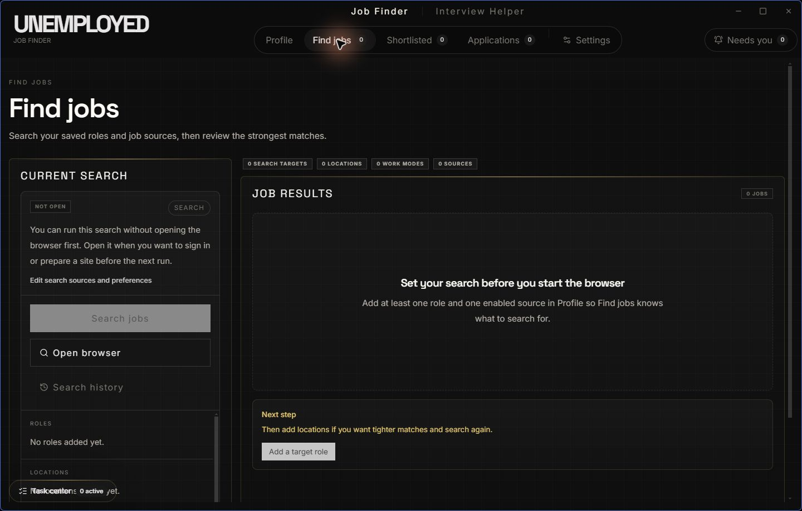
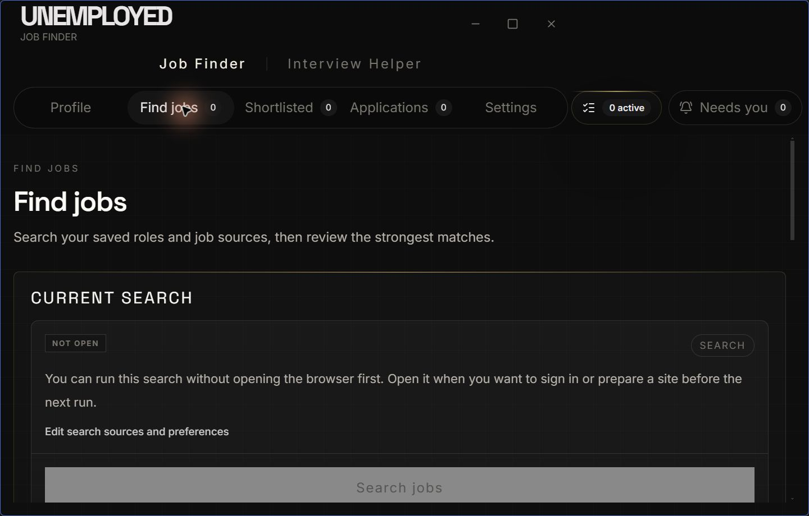
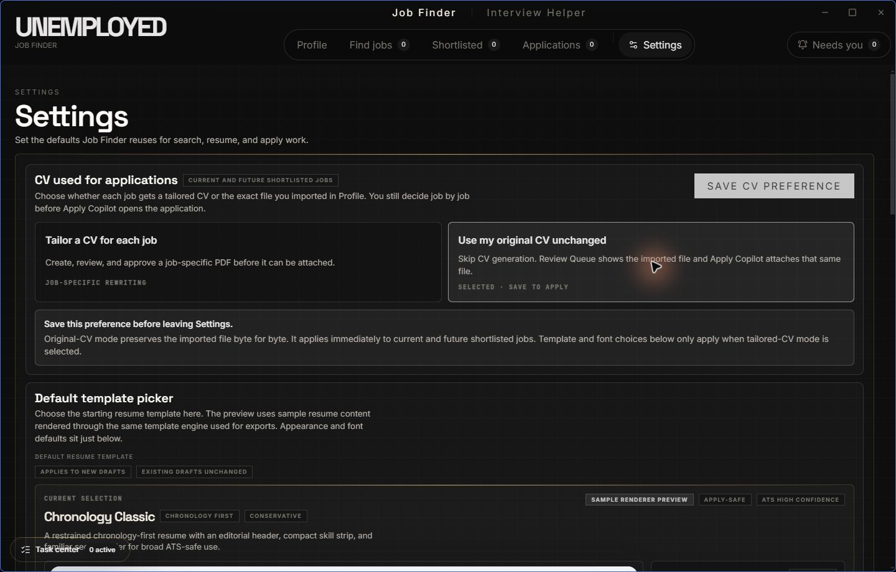
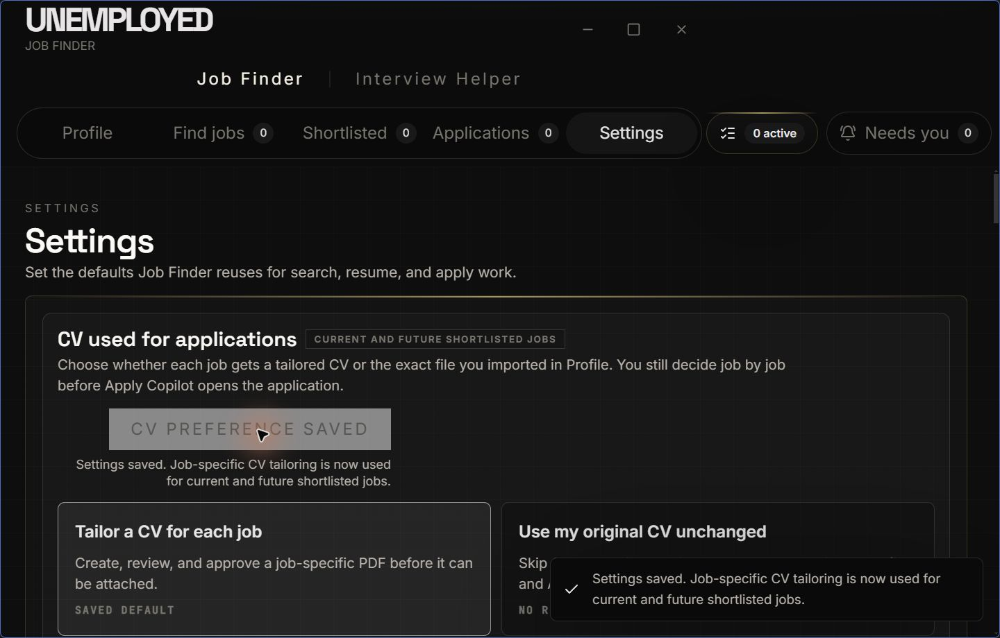
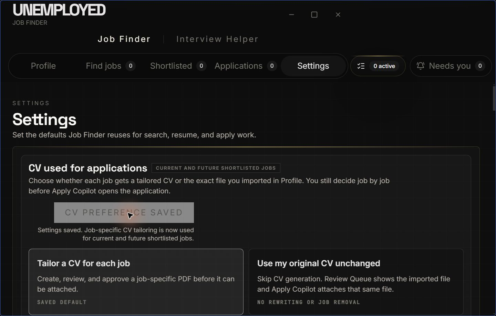
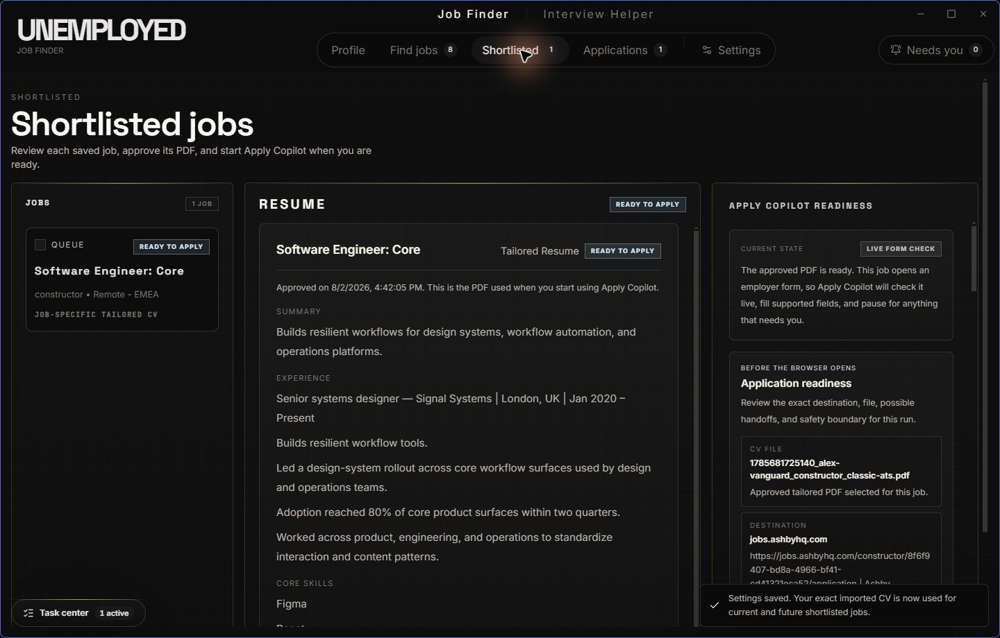
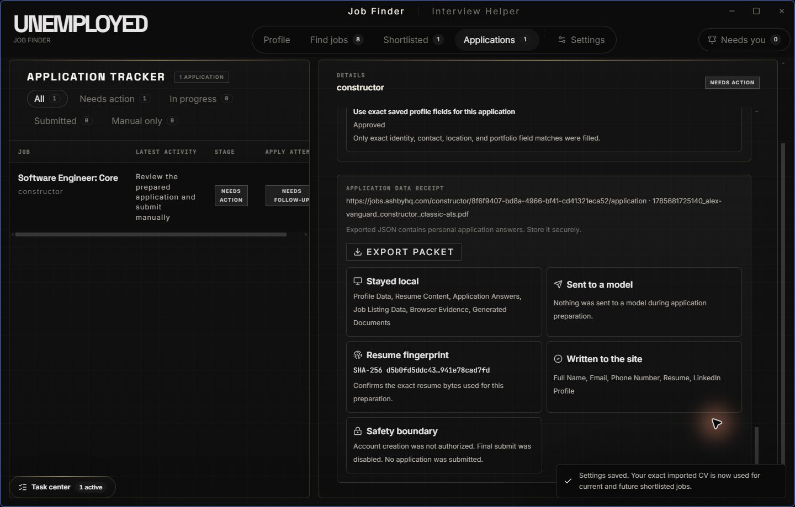

Task Center covered workflow content
BeforeThe fixed bottom-left launcher obscured Current Search and became worse at narrow sizes and zoom.
This page captures the final reported UI fixes, the current production-build evidence, and the boundaries that remain intentionally human-owned.
These are current-run repository screenshots. The “before” images preserve the defect; the “after” images came from the rebuilt app.

The fixed bottom-left launcher obscured Current Search and became worse at narrow sizes and zoom.

The launcher is part of Notifications and actions; the expanded panel remains a responsive popover.

Users could select the original-CV mode while the nearby save affordance remained misleading.

The selected mode, other staged settings, saved truth, and retryable failure state share one typed save path.

The global confirmation clears after five seconds. Failed saves stay visible and retryable.

Original-CV mode preserves every byte. Tailored mode retains grounded history, claim evidence, versioning, export integrity, and explicit approval.
The current live Glean/Greenhouse run reached the visible final “Apply” control with a synthetic candidate and stopped.

passed_final_checkpoint_without_submit
The detailed initiative evidence remains in the release-readiness report and living release audit.